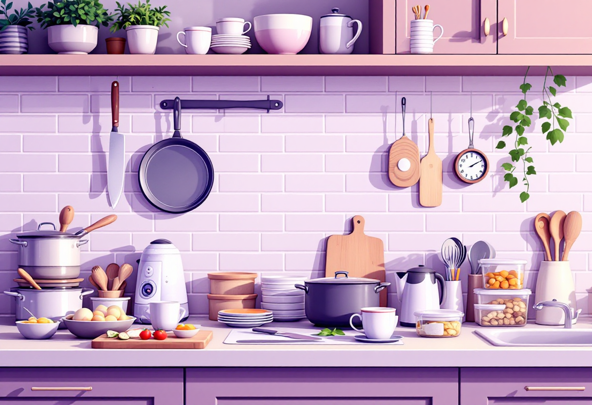
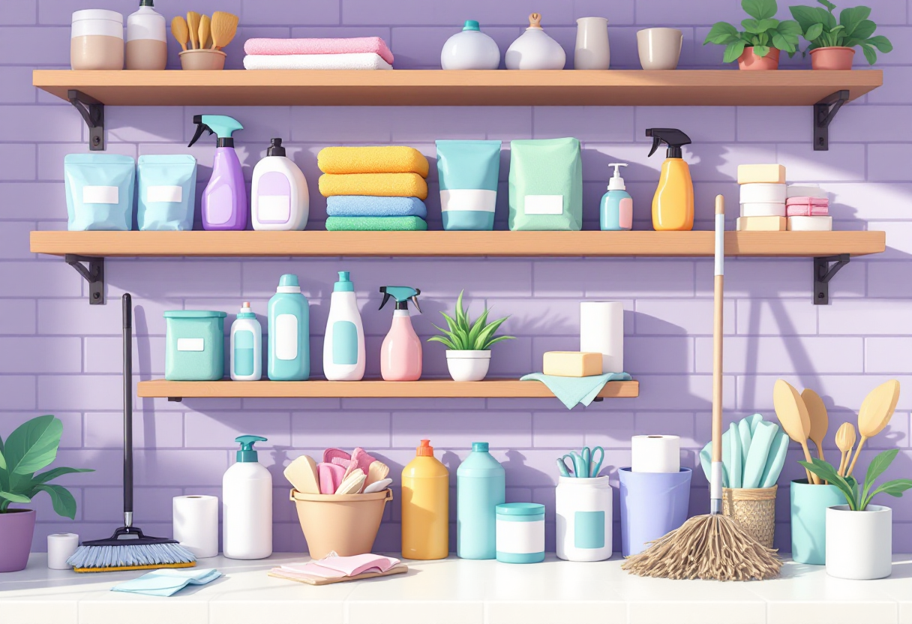
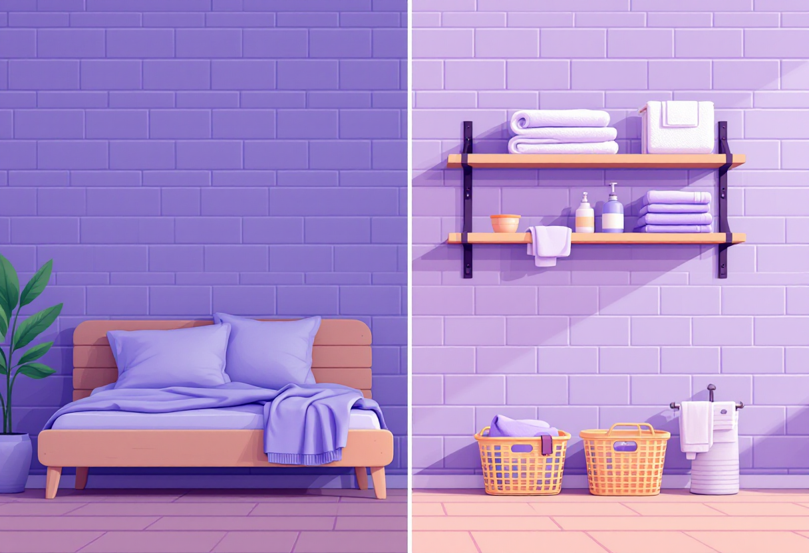
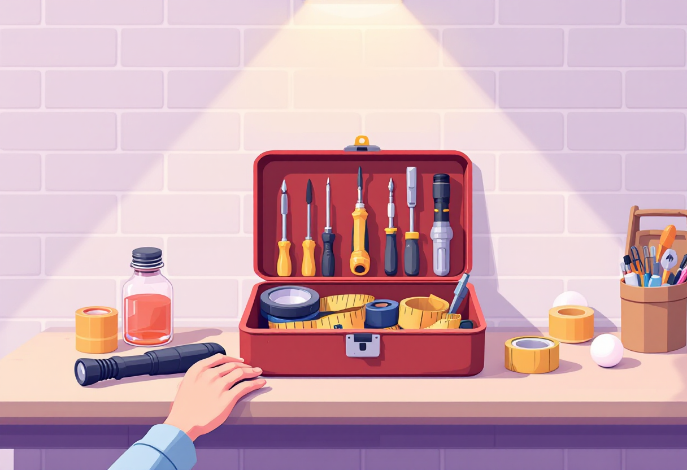

Базовий набір для дому
Що купити одразу після переїзду: мінімальний набір для комфортного самостійного життя.

Кухня: що потрібно одразу
Не обов'язково купувати все й одразу. Ось що реально знадобиться з першого дня.
- Каструля (1–2 л) і сковорода — мінімум для готування.
- Ніж кухарський і дошка для нарізки.
- Тарілки, чашки, виделки, ложки, ножі (2–4 комплекти).
- Чайник (електричний — найзручніший).
- Консервний і штопорний відкривач, овочечистка.

Прибирання та гігієна
Базова «збройна» для чистоти вдома — недорого і покриває більшість ситуацій.
- Швабра або пилосос (або обидва — залежно від покриття підлоги).
- Відро, ганчірки, губки для посуду.
- Засіб для миття посуду, засіб для підлоги, чистячий спрей.
- Туалетний папір, мило, шампунь — запас на 2–4 тижні.

Ліжко та ванна кімната
Сон і гігієна — база. Не відкладай базові речі «на потім».
- Комплект постільної білизни (2 комплекти — щоб міняти під час прання).
- Подушка і ковдра відповідно до сезону.
- Рушники (мінімум 2: для тіла та рук).
- Килимок у ванну та туалет — щоб не ковзати.

Інструменти і корисні дрібниці
Базовий «ремонтний» набір знадобиться раніше, ніж здається.
- Молоток, набір викруток (+ і –), плоскогубці.
- Рулетка — щоб вимірювати меблі та простір.
- Ліхтарик або павербанк зі ліхтариком — на випадок відключення світла.
- Запасні лампочки, скотч, кілька дюбелів і саморізів.
- Аптечка: знеболювальне, антисептик, бинт, лейкопластир.